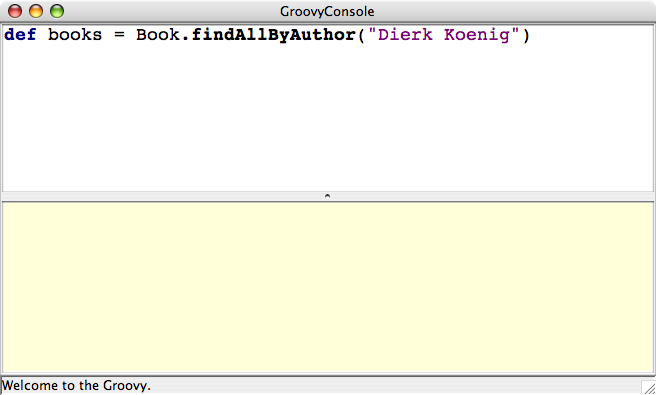

console
Purpose
Starts an instance of the Swing graphical Groovy console with an initialized Grails runtime.Examples
Description
Starts the Grails console, which is an extended version of the regular Groovy console. Within the binding of the console there are a couple of useful variables:
ctx - The Spring ApplicationContext instancegrailsApplication - The GrailsApplication instance
These are useful as they allow access to the conventions within Grails and interesting beans in the context.Usage:
grails [environment]* console
StatusFinal - When the console is loaded
Screenshot: